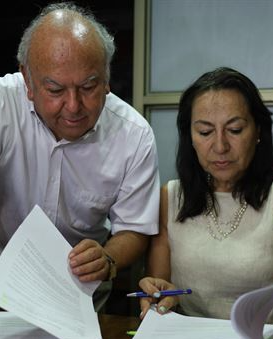
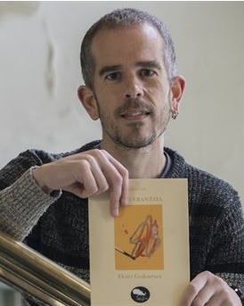
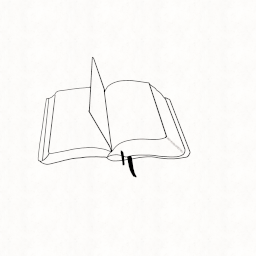

Hilabete honetako gomendazioak
Nork edo zerk hiltzen ditu Estatu Batuetan kokatutako herri txiki bateko umeak? Zergatik ziklikoki izua Derryra, pailazo baten forma hartuta? Liburu honetako protagonistek misterio hau ebatzi beharko dute. 27 urte pasa dira, lasaitasunean, baina umeak zirenean egin zuten promesa, Derryra eramango die protagonistei. Iraganari aurre egin beharko diote.
Autorea: Stephen King
Publikazio urtea: 1986
Carrie, itxura txikiko gazte bat, bere klasekideen erasoak jasan behar ditu, bere amarekin bizi da, hau erlijio fanatikoa izanik. Egun baten, eskolako dutxetan, hilekoa etortzen zaio Carrie-ri eta honek bere klasekideen burlak ekartzen ditu. Hau gertatu eta gero, hainbat naturaz gaindiko eta beldurgarriak diren gertakariak ematen dira.
Autorea: Stephen King
Publikazio urtea: 1974
Autorearen informazioa
Portland-en jaio zen 1947ko irailaren 21ean. Stephen King-ek 70 liburu baino geihago idatzi ditu, guztiak, best seller internazionalak. Horietako batzuk, goian aipatutakoaz aparte, Después, La sangre manda, El instituto... La Torre Oscura eta It liburuak adibidez, zinemara adaptatu dira, baita ere Mirery, El resplandor, Carrie, El juego de Gerald... PEN American Literary Service Award saria jaso zuen 2018.
Literaturari buruzko azken albisteak
Pablo Neruda idazlea "Txileko Estatuko agenteek pozoituta" hil zen, adituen beste txosten baten arabera
Poeta eta politiko txiletarraren familiak aurreratu du ikerketaren emaitza (bihar aurkeztuko dute ofizialki). Horren arabera, botulismoa eragiten duen bakterioa izan zen haren heriotzaren eragilea, ez pankreako minbizia...
Ekaitz Goikoetxea: "Aforismoa ekaitzaldi bat da, trumoi txikiak lehertu behar lizkiguke geure baitan"
Ekaitz Goikoetxea sortzaileak "Balio erantzia" aforismo sorta argitaratu du Balea Zuria argitaletxearen eskutik, Felipe Juaristik hitzaurrean esaten duen bezala, "hitz egoki eta neurtuekin egia esateko" hirurehun ahalegin baino gehiago...
Ruben Ruiz, 'Beti mugan' eleberriaz: "Bidaia iniziatiko bat kontatzen da, heltze prozesu bat"
'Beti mugan' Comète sarea hizpide duen eleberri historikoa aurkeztu du Ruben Ruiz Perezek "Hitzokei"n. Mattin da protagonista, Baztanen kontrabandoaren munduan sartzen den mutiko bat. Beste pertsonaia bat Braulio da, herriko gizonik zaharrena, detaile guztiei erreparatzen diena...
Albiste guztiak irakurtzeko egin klik hemen
Katalogoa
Gure katalogoan mota guztietako liburuak ditugu, bertan murgildu nahi? Klikatu hemen eta murgildu zaitez liburuen munduan!
